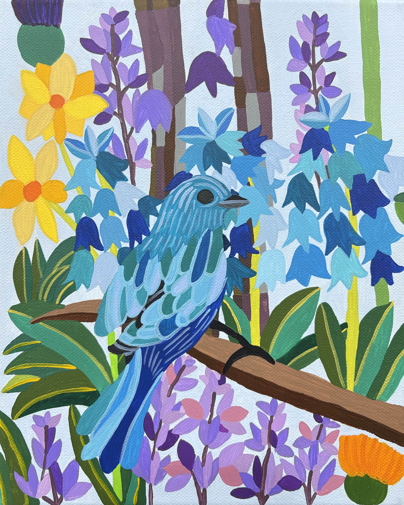
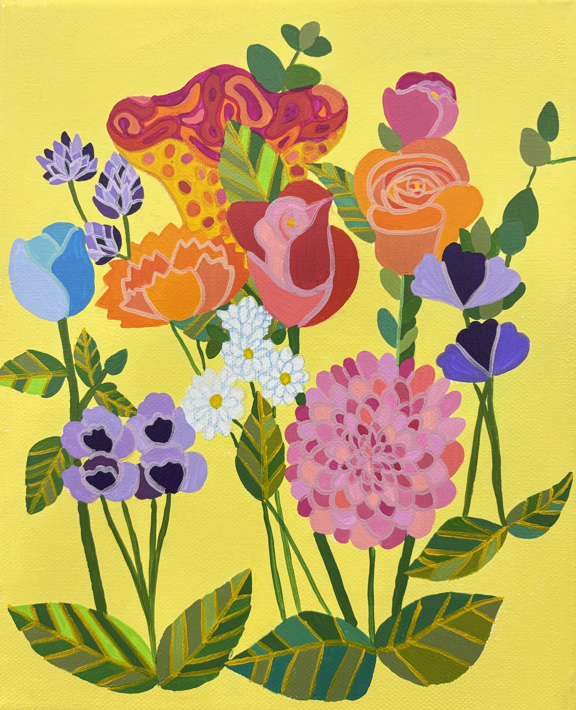
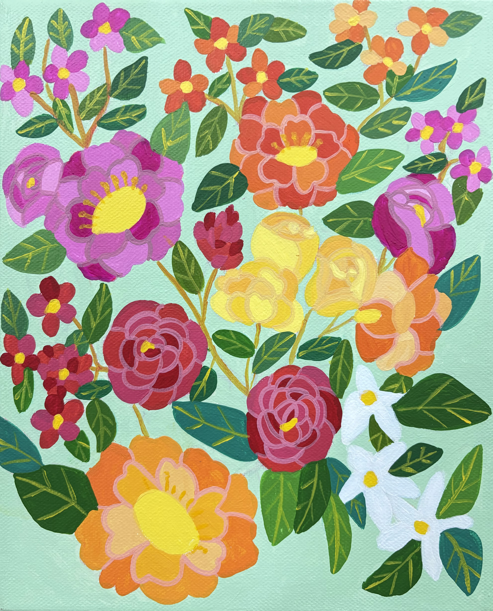
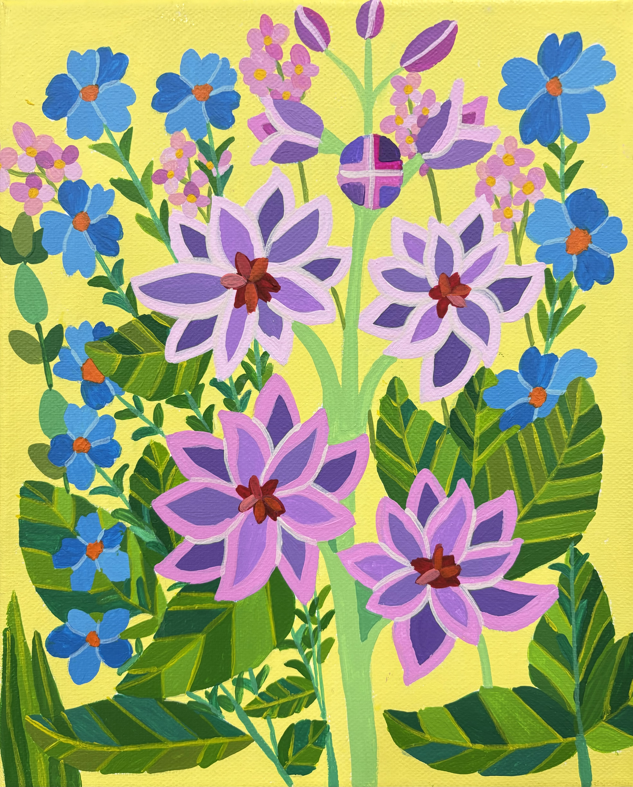
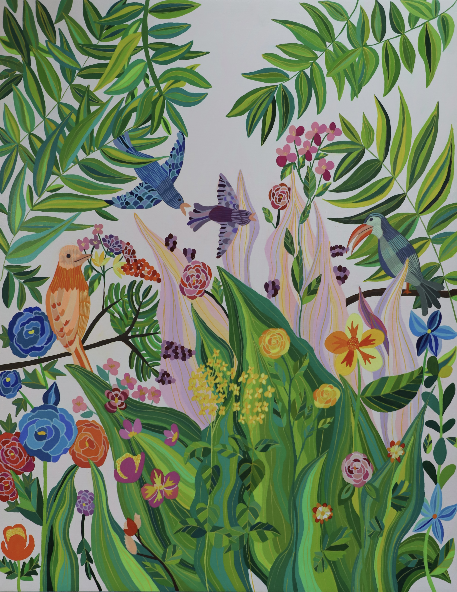
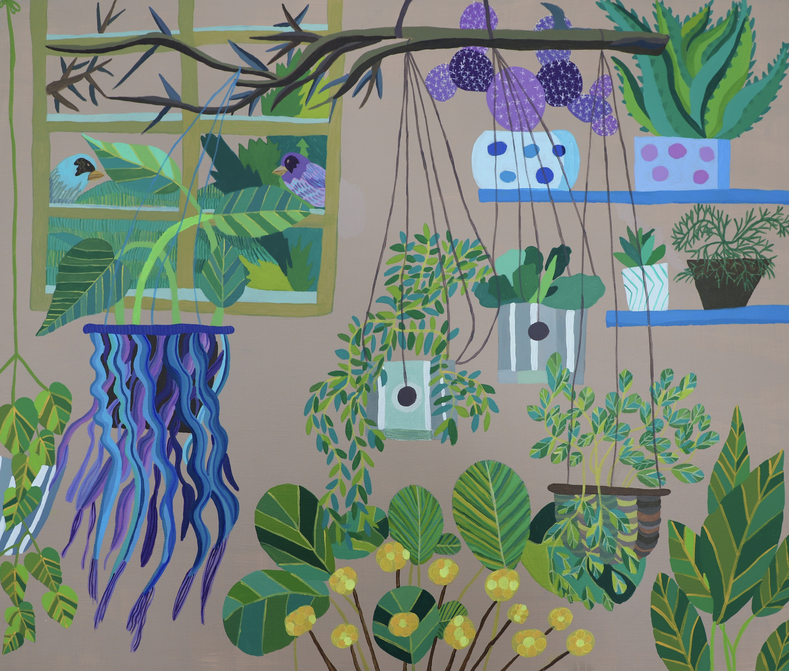

《달빛에 빛나는 꽃》, 2022, Acrylic on canvas, 97x65.2cm

《파랑새》, 2022, Acylic on canvas, 27x22cm

《봄의 정원》, 2022, Acylic on canvas, 27x22cm

《동백꽃 정원》, 2022, Acylic on canvas, 27x22cm

《물가에 핀 꽃들》, 2022,acrylic on canvas, 53x41cm

《보라빛 정원》, 2022, Acylic on canvas, 27x22cm

《자작나무 숲의 오두막》, 2022, acrylic on canvas, 112x162cm

《노래하는 새들의 정원》, 2024, Acrylic on canvas, 116.8x91cm

《초록 화분들》, 2025, Acrylic on canvas, 60.6x72.7cm